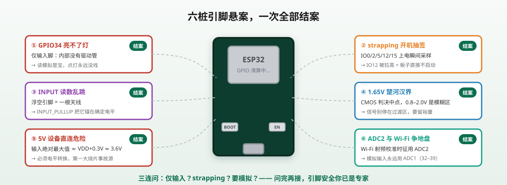

阶段二 · 输入与输出 ｜ 难度：★★★★☆ ｜ 预计用时：60 分钟（本课是"理论清算课"，动手少、动脑多）
本课材料：前 5 课的板子与接线即可（本课大部分是"讲清楚"，附 2 个小验证实验） 无硬件替代：Wokwi 可复现全部验证实验

本课不做出新东西——它把你前 5 课攒下的所有"引脚悬案"一次性结案。
到目前为止，你在引脚上欠了 5 笔账。这节课就是清算日：
| # | 悬案 | 埋于 | 本课 |
|---|---|---|---|
| 1 | LED 接 GPIO34 为什么不亮？ | 第 1 课挑战 3 | ✅ 揭晓 |
| 2 | strapping 脚（IO0/2/5/12/15）为什么"开机时不能乱拉"？ | 第 1 课三原则 | ✅ 揭晓 |
| 3 | INPUT 没上拉时读数为什么乱跳？（浮空引脚） |
第 2 课挑战 3 | ✅ 揭晓 |
| 4 | 电平阈值 1.65V 是怎么回事？ | 第 2 课正文 | ✅ 揭晓 |
| 5 | ADC2 接 GPIO25 读数为什么诡异？ | 第 4 课挑战 4 | ✅ 揭晓 |
| 6 | 5V 设备能不能直接接？（第 5 课埋） | 第 5 课挑战 4 | ✅ 揭晓 |
学完本课，你拥有"引脚安全"的完整知识——后面 9 课再接任何东西，你都知道哪根能碰、哪根要小心、为什么。
第 1 课你把 LED_PIN 改成 34，灯纹丝不动。现在真相是：
ESP32 的 GPIO34/35/36/39 是"仅输入（Input Only）"引脚——芯片内部根本没有通往外部的驱动管，
digitalWrite对它们是空操作。
普通 GPIO 的内部结构是这样（一个"推挽输出"）：
3.3V
│
[PMOS 管] ← 上管导通 → 输出 3.3V（HIGH）
│
├────→ 引脚
│
[NMOS 管] ← 下管导通 → 输出 0V（LOW）
│
GND
digitalWrite(HIGH/LOW) 就是轮流开关这两颗管子。而 GPIO34–39 连这对管子都没装——它们只接了读取电路（比较器/ADC），是纯粹的"耳朵"，没有"嗓子"：
| 引脚 | 能读 | 能写 | 内部上下拉 | 典型用途 |
|---|---|---|---|---|
| GPIO0–33（多数） | ✅ | ✅ | ✅ 有 | 万能通用 |
| GPIO34/35/36/39 | ✅ | ❌ | ❌ 没有 | 传感器模拟输入、中断输入 |
| GPIO34/35/36/39 用 analogRead | ✅（ADC1） | — | — | 第 4 课电位器就该接这里 |
同一个引脚，接 LED 是坑，接电位器是宝——第 4 课我们故意让你把电位器中脚接 34，就是提前演示"它的正确用法"。谜底一句话：
GPIO34–39：只进不出，且无内部上下拉。用它读（尤其读模拟量）很好，想用它输出/点灯，永远没戏。
验证实验（2 分钟）：把第 2 课的 LED 接到 GPIO34，上传第 1 课代码 → 不亮；换回 GPIO4 → 亮。现象与原理对上了，这个雷就永远拆了。
第 1 课三原则说过"有的引脚开机时不能拉高"。主角是 5 个 strapping 引脚（启动配置脚）：
芯片在上电复位的那一瞬间（几十毫秒），会"采样"这几个引脚的电平，用来决定启动模式、Flash 电压、日志开关等硬件配置。采样完，它们才变回普通 GPIO。
| 引脚 | 开机时采样决定什么 | 风险场景 | 你的安全垫 |
|---|---|---|---|
| GPIO0 | 启动模式：LOW=下载模式，HIGH=运行模式 | 外设把 0 拉低 → 板子开机进下载模式"卡住" | 板载 BOOT 键就是它，平时悬空/上拉 |
| GPIO2 | 下载模式必须为 LOW 或悬空 | 外设拉高 2 → 下载失败 | 板上有 10kΩ 下拉（第 1 课提过） |
| GPIO5 | SDIO 从机模式时钟 | 一般外设无影响 | 当普通脚用没问题 |
| GPIO12 (MTDI) | Flash 电压：1.8V / 3.3V 选择 | ⚠️ 外设把 12 拉高 → Flash 电压选错 → 芯片直接无法启动 | 接 3.3V 器件时避免用 12 当输入 |
| GPIO15 | 启动时的日志打印开关 | 拉低 → 开机日志静音（通常无害） | 当普通脚用没问题 |
最危险的是 GPIO12——它不是"偶尔抽风"，而是接错了板子根本开不了机（新手以为板子烧了）。记住这条工程红线：
⚠️ GPIO12：不要接"开机瞬间会输出高电平"的外设（比如某些模块的 INT/SDA 上拉）。要用它，确保外设开机时不驱动它为高。
为什么叫"抽签"？ 因为这些引脚平时（程序跑起来后）就是普通 GPIO——只有上电那几十毫秒有双重身份。你的外设如果恰好在那几十毫秒输出高/低电平，就可能"劫持"启动配置。这就是第 1 课原则 3"不确定的引脚先查表"的深层原因。
INPUT 为什么乱跳第 2 课挑战 3 你把 INPUT_PULLUP 改成 INPUT，按钮读数变幽灵。原因：
高阻输入的引脚像一根天线。 没有上拉/下拉电阻把它"锚"在确定电平上，引脚上的微小电荷会被空气中的电磁噪声（50Hz 市电、USB、Wi-Fi 射频）推来推去——
digitalRead读到的是随机数。
有上拉： 3.3V ──[10kΩ]──┬── 引脚 松开时被拽到 HIGH，稳定
│
[按钮]
│
GND
浮空： └── 引脚 谁都不管 → 噪声说了算 → 0/1 乱蹦
三条铁律（背下来）：
INPUT_PULLUP 是 90% 场景的默认选择（按钮接 GND，松开读 HIGH）顺带解释第 4 课遗留的小尾巴：为什么模拟读数静止时也小幅抖动？ 同理——噪声 + ADC 量化误差。工程上用软件滤波压制（比如连续采 8 次取平均），第 11 课读传感器时我们正式用上。
第 2 课说"阈值大约 1.65V，低于判低、高于判高"。现在补完这张图：
ESP32 输入判决
0V ────────────┬──────────────── 3.3V
│
≈1.65V（VDD/2，CMOS 中点）
│
判 LOW │ 判 HIGH
（但 <0.8V │ （但 >2.0V
才保险） │ 才保险）
│
┌─────────┴─────────┐
│ 0.8V ~ 2.0V 是 │ ← "模糊区/过渡区"
│ 危险的灰色地带！ │ 电压停在这里 → 输出不确定
└───────────────────┘
三个实用结论：
绝对不行（绝大多数情况）。ESP32 引脚不耐 5V。
第 1 课原则 1"别碰 5V"的技术细节：
| 项目 | 数值 | 含义 |
|---|---|---|
| VIH（输入高电平门限） | 2.0V（规范值） | 超过它判高 ✅ |
| VDD + 0.3V（输入绝对最大值） | ≈3.6V | 超过就可能烧毁引脚！ |
| 5V 信号打进来 | 5V ≫ 3.6V | 超出绝对最大额定 → 长期必损，可能立即损坏 |
所以：
📌 第 5 课挑战 4 的答案：接 5V 设备前先问"它的输出是 5V 吗？"，是 → 加电平转换。"3.3V 系统 + 5V 外设"是嵌入式第一大烧片事故源，比忘串电阻还常见。
第 4 课挑战 4 你可能发现：GPIO25/26/27/4 等 ADC2 引脚的模拟读数诡异。完整原因：
ESP32 有两组 ADC：ADC1（GPIO32–39）和 ADC2（GPIO0/2/4/12–15/25–27）。而 Wi-Fi 射频工作时，硬件会"征用" ADC2 做射频校准——这期间你的
analogRead(ADC2)读到的是垃圾。
| 场景 | ADC1（32–39） | ADC2（0/2/4/12–15/25–27） |
|---|---|---|
| Wi-Fi 关闭 | ✅ 正常 | ✅ 正常 |
| Wi-Fi 开启 | ✅ 正常 | ❌ 读数不可用 |
工程红线：
⚠️ 只要程序会开 Wi-Fi（第 11 课起！），所有模拟输入必须用 ADC1（GPIO32–39）。
这就是为什么第 4 课电位器特意接 GPIO34（ADC1）——当时是埋雷，现在拆掉：模拟输入永远优先 32–39。
| 引脚类别 | 成员 | 能输出 | 能模拟输入 | 内部上下拉 | 注意 |
|---|---|---|---|---|---|
| 万能通用 GPIO | 0,1,3,4,5,12,13,14,15,16,17,18,19,21,22,23,25,26,27,32,33 | ✅ | 部分（见下） | ✅ | 最安全 |
| 仅输入 | 34,35,36,39 | ❌ | ✅（ADC1） | ❌ | 读模拟/中断专用 |
| strapping | 0,2,5,12,15 | ✅ | 部分 | ✅ | 开机采样；12 最危险 |
| ADC1 | 32,33,34,35,36,39 | 32/33 可输出 | ✅ | 32/33 有 | Wi-Fi 下唯一安全的模拟区 |
| ADC2 | 0,2,4,12,13,14,15,25,26,27 | ✅ | ⚠️ Wi-Fi 下不可用 | ✅ | 开 Wi-Fi 别用 |
| TX0/RX0 | 1,3 | ✅ | — | ✅ | 串口监视器专用，别接外设 |
| 电源 | 3V3, VIN, GND | — | — | — | 3V3 别超 500mA；VIN=5V |
接任何引脚前的三连问（把第 1 课三原则升级成专家版）：
出题范围就是本课 6 大悬案的主角。答错不扣分——把每个引脚的脾气都想明白，第 9–12 课接外设时你会感谢自己。
INPUT_PULLUP 如何解决INPUT vs INPUT_PULLUP 读数对比全部打勾 → 你已经拥有"引脚安全"完整知识体系，成为本系列第一个"专家级小里程碑"。进入第 7 课，开始通信大部头。
| 现象 / 报错关键词 | 原因 | 解决办法 |
|---|---|---|
引脚 digitalWrite 无效 |
接了 34/35/36/39（仅输入） | 换到通用脚；本课悬案一 |
| 板子上电不启动/反复重启 | ① GPIO12 被外设拉高 ② 电源不稳 | 断开 12 上的外设再试；查供电（第 1 课 brownout） |
INPUT 读数随机乱跳 |
浮空引脚 | 改 INPUT_PULLUP 或加外部电阻；本课悬案三 |
| 模拟读数在 Wi-Fi 启动后变垃圾 | 用了 ADC2 引脚 | 模拟输入换到 32–39；本课悬案六 |
| 接 5V 外设后引脚发烫/失效 | 超过 VDD+0.3V 绝对最大值 | 立即断电，换电平转换；本课悬案五 |
| 进下载模式失败（一直 Waiting for upload） | GPIO0 被外设拉低 | 断开 0 上的外设，按住 BOOT 重试 |
| 开机日志莫名消失 | GPIO15 被拉低 | 属正常（strapping），不用管或查外设 |
引脚的地基终于打牢——现在开始"让芯片互相说话"的正式篇章。第 7 课：I2C 总线入门：只用两根线（SDA/SCL）+ 上拉电阻，就能挂上一整排传感器和屏幕；你会学到寻址（多设备如何区分谁在说话）、应答位（对方听懂了没）、并点亮一块 OLED 显示屏打印"Hello"。第 1 课引脚图里"IO21 = I2C SDA（第 8 课传感器主角）"的伏笔，从这里开始兑现。
本课程系列：从点亮一盏灯，到设计一台会自己思考的机器。